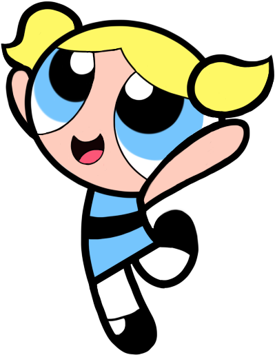

La rubia con colitas, es la más «suave y dulce» de las tres, en virtud de su buen humor y afinidad con la naturaleza. Le caracteriza el color azul y el ingrediente que define su personalidad es el azúcar. A menudo se le estima como la más infantil y vulnerable, aunque debajo de esta fachada es en realidad «enérgica y decidida a hacer las cosas bien». Goza de una gran imaginación y a veces elige mediar con actos de amabilidad. Domina el español, puede comunicarse con los animales y su superpoder único es emitir ondas supersónicas.
